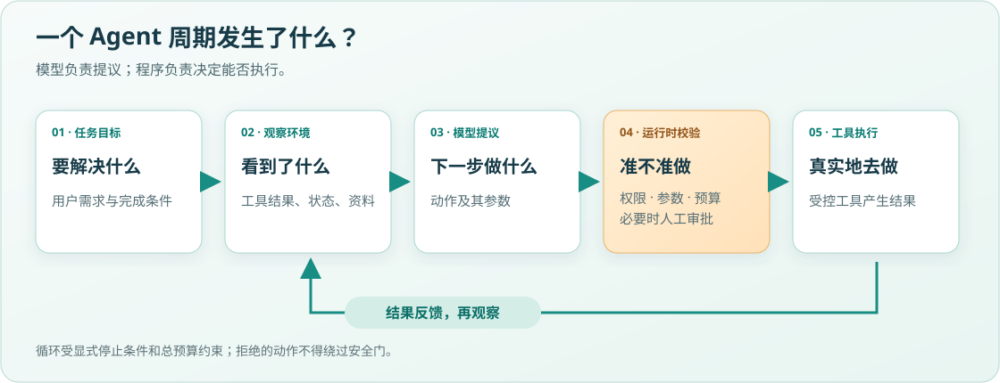
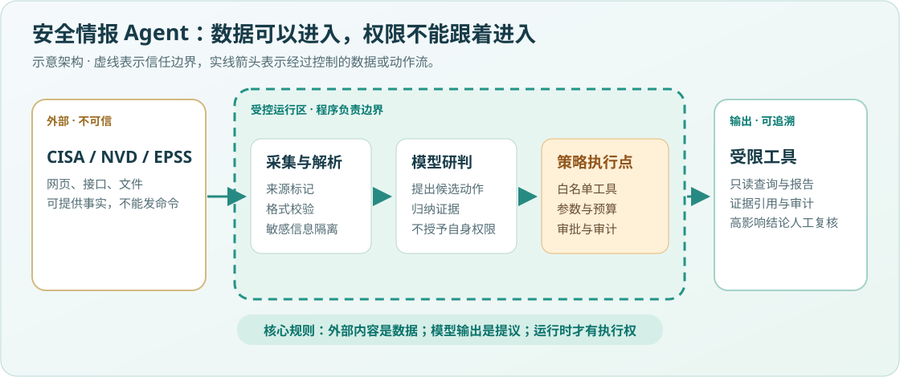

今天要解决什么
当模型只能回答文字时，它还是一个生成器；当它能观察环境、选择动作、调用工具并根据结果继续决策时，才进入 Agent 系统。今天的小胜利是：你能画出一个 Agent 的闭环，并指出每条边上的安全问题。
- 区分模型、工作流与 Agent
- 用 Observe–Decide–Act–Evaluate 描述运行循环
- 识别动作权限、停止条件和环境反馈三个关键控制点
从一次漏洞查询开始
用户问：“最近哪些漏洞最值得修？”普通聊天模型可以写一段看似合理的回答，但它不知道你的资产，也不知道数据是否最新。安全情报 Agent 则需要先读取可信来源、归一化 CVE、查询是否已被利用、结合资产相关性打分，最后给出带证据的结论。关键差别不是“回答更长”，而是它可以在环境中执行动作并承受动作后果。
51 秒图解：先看模型、运行时与工具如何分工，再辨认外部数据与执行权限之间的边界。视频自带画面字幕，可暂停或静音；下面的图文包含同样的核心内容。
阅读视频讲解文字
用户提出任务，系统读取环境，模型提出候选动作。运行时检查工具白名单、参数、权限与预算，必要时交给人审批；工具执行后的结果回到观察。网页与情报源只能提供数据，不能授权动作。画系统图时，除了模型，还要画出外部数据、运行时、受控工具、报告输出与信任边界。
第一条安全公理：模型输出只是一个不可信的提案。只要输出将触发网络请求、文件写入、消息发送或权限变化，程序就必须再次校验。
五部分系统模型

沿箭头读图：目标 → 观察 → 模型提议 → 运行时校验 → 工具执行 → 再观察。循环必须有停止条件与总预算；模型提议不能跳过校验。
模型负责从上下文产生候选决策；工具把候选动作映射到外部能力；状态记录当前任务和已发生事实；环境产生工具结果；运行时负责循环、校验、预算、审批和停止。把“Agent”只等同于大模型，会遗漏真正决定可靠性与安全性的运行时。
| 组件 | 正确职责 | 典型失败 |
|---|
| 模型 | 提出下一步与参数 | 幻觉、被注入、目标漂移 |
| 工具 | 执行一个边界清晰的能力 | 权限过大、参数未验证 |
| 状态 | 保存任务事实与过程 | 跨用户串线、投毒 |
| 运行时 | 执行策略和停止条件 | 无限循环、默认放行 |
| 环境 | 返回真实但未必可信的观察 | 恶意网页、过期情报 |
Agent 与工作流的边界
如果步骤和分支都能预先写清，就优先使用工作流：它更可预测、更容易测试。只有当下一步依赖开放环境、无法穷举分支，且模型决策的收益高于新增风险时，才引入 Agent。一个系统也可以混合：外围使用确定性工作流，局部节点让模型做受限判断。
安全不是附加模块
Agent 安全的对象不是一句提示词，而是一条完整因果链：谁能影响上下文、模型能提议什么、运行时允许什么、工具拥有什么权限、结果会流向哪里。安全设计的目标不是让模型“永不犯错”，而是让一次错误无法轻易升级为越权、泄露或不可逆操作。

虚线框是受控运行区。请找出两处边界：外部资料进入系统、模型建议变成工具动作。前者要处理来源与内容，后者要处理授权与预算。
因此，本课程在学习每个开发概念时同步学习相应控制：工具对应最小权限，记忆对应隔离和过期，规划对应深度预算，外部资料对应间接提示注入，评测对应对抗测试。
练习与可见产出
画出你的毕业项目第一版系统图
在纸上画出：用户、Agent 运行时、模型、CISA/NVD/EPSS 等数据源、本地状态、报告输出。用虚线标出信任边界，并在每条跨边界箭头旁写出“数据”或“动作”。
完成标准
- 至少 5 个组件；
- 至少 2 条信任边界；
- 每个动作都有执行者；
- 写出一个停止条件和一个预算上限。
本课一手阅读与视频
本课优先：原理主读 → 安全映射，合计约 35 分钟（含画图与产出，计入本课 150 分钟）。视频和进阶阅读均为选学，不需要全部完成。将资源产出写进本课学习记录即可，不新增必填表单。
优先 1 · 原理主读Yao 等 · 英文 · 2023 年 v3 · 阅读与产出约 20 分钟具体看：论文摘要；从摘要页进入作者项目页，观察示例里的 Thought、Action、Observation。现在不读实验表格，也不要求理解训练细节。
带着问题读：只有一次模型回答，和执行工具后继续观察的循环，有什么不同？
闭卷产出：用 3 个箭头画出“提出动作 → 环境返回 → 再次决策”，再指出本课增加的运行时授权检查在哪里。ReAct 提供循环思想，不等于完整安全架构。
摘要及作者项目页已核验（2026-09-27）；看英文困难时，用本课五部分系统图完成同一产出。
优先 2 · 安全映射OWASP · 英文 · 工具安全与人在回路 · 阅读与产出约 15 分钟具体看：“1. Tool Security & Least Privilege”和“4. Human-in-the-Loop Controls”；先读原则，不照抄中间代码。
映射任务：在你的安全情报 Agent 图上标出工具白名单、执行前授权、高风险人工审批各位于哪里。
完成产出：写出一条“即使模型提出动作，程序仍必须拒绝”的规则，以及执行这条规则的组件。
相关正文与定位已核验（2026-09-27）；网络不可用时，使用本课信任边界图完成相同任务。
选学 · 视频精学：观察真实框架如何组织循环
OpenAI Academy · 英文 · 自主观看 20 分钟＋产出 5 分钟；这是学习预算，不是片长
为什么看：公开简介覆盖 agents、tools、memory 与 Agents SDK，适合用来观察抽象循环的框架映射。此时不跟敲框架代码。
- 看前预测：画出你认为 agent、tool、memory 在五部分系统图中的位置。
- 暂停观察：遇到工具或记忆相关讲解时暂停；标出“模型建议”和“应用执行”的分界，没讲清的地方打问号。
- 看后迁移：换一种颜色修正图，并写出一项仍需要你的应用负责的安全检查。
核验边界：2026-09-27 已确认标题与公开简介；页面提示登录，未验证完整播放、字幕或精确时间戳，因此不编造分段。无法观看时，用本课 51 秒图解和系统图完成同一映射任务；本地短视频是讲解材料，不是一手视频替代品。
选读 · 进阶辨析：什么时候其实不需要 Agent？
Anthropic · 英文 · 2024 年文章 · 阅读与产出约 15 分钟
具体看：“What are agents?”和“When (and when not) to use agents”；不要现在展开所有编排模式。
任务与产出：分别为“每天固定汇总公开漏洞”和“根据新证据决定继续查什么”选择工作流或 Agent，用两句话解释依据，并列出成本或可预测性的代价。
指定正文已核验（2026-09-27）；原页提示工具生态已变化，本课仅使用架构辨析，不把旧工具名单当现行选型。不访问外链也可用本课边界辨析完成此题。
带走这个心智模型
Agent = 模型驱动的决策循环 + 受控工具 + 显式状态 + 环境反馈；运行时负责把不可信建议约束为可接受动作。
复习安排
- 24 小时后：不看页面，默画五部分闭环。
- 7 天后：拿一个日常自动化例子，判断该用工作流还是 Agent。
- 阶段末：在毕业项目架构图上补全权限、预算与停止条件。
本课掌握证据与疑难记录
请写下练习结果、你能独立解释的内容，以及尚未解决的问题。从课程启动器打开时，答案自动写入本地课程目录，AI 下次对话会直接读取；仅双击 HTML 时仍保存在浏览器，可下载备份。
尚未填写